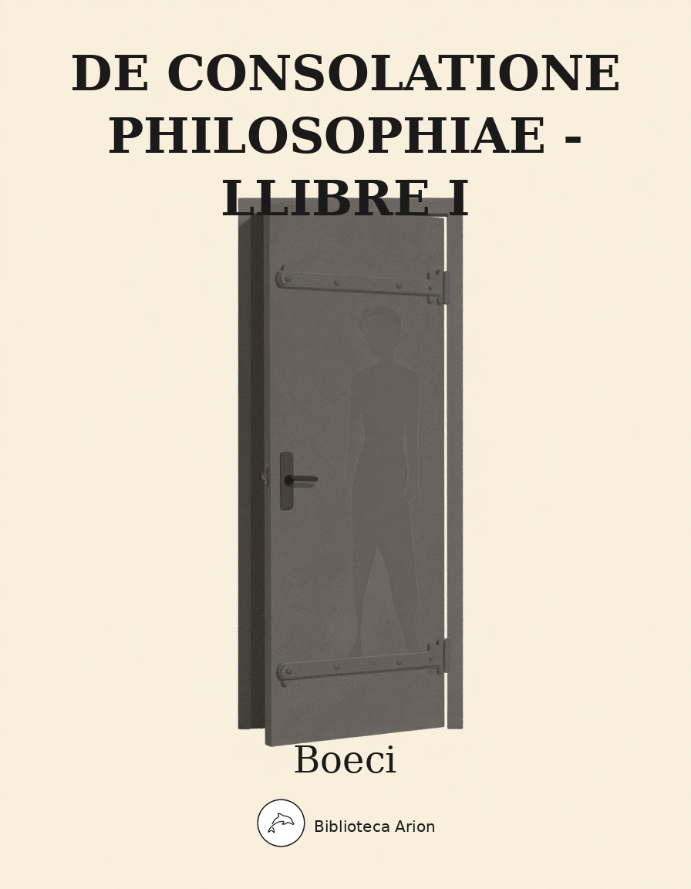

EPUBDe Consolatione Philosophiae - Llibre I
De Consolatione Philosophiae - Liber Primus
Primer llibre de La Consolació de la Filosofia, escrit per Boeci a la presó mentre esperava l'execució. Diàleg entre Boeci i la Filosofia personificada, alternant prosa i vers (prosimetrum).
Carmina qui quondam studio florente peregi,
Flebilis heu maestos cogor inire modos.
Ecce mihi lacerae dictant scribenda Camenae
Et ueris elegi fletibus ora rigant
Has saltem nullus potuit peruincere terror,
Ne nostrum comites prosequerentur iter.
Gloria felicis olim uiridisque iuuentae
Solantur maesti nunc mea fata senis.
Venit enim properata malis inopina senectus
Et dolor aetatem iussit inesse suam.
Intempestiui funduntur uertice cani
Et tremit effeto corpore laxa cutis.
Mors hominum felix quae se nec dulcibus annis
Inserit et maestis saepe uocata uenit.
Eheu quam surda miseros auertitur aure
Et flentes oculos claudere saeua negat.
Dum leuibus male fida bonis fortuna falleret,
Paene caput tristis merserat hora meum.
Nunc quia fallacem mutauit nubila uultum,
Protrahit ingratas impia uita moras.
Quid me felicem totiens iactastis amici?
Qui cecidit, stabili non erat ille gradu.
Haec dum mecum tacitus ipse reputarem querimoniamque lacrimabilem stili officio signarem, adstitisse milli supra uerticem uisa est mulier reuerendi admodum uultus, oculis ardentibus et ultra
communem hominum ualentiam perspicacibus colore umido atque inexhausti uigoris, quamuis ita aeui plena foret ut nullo modo nostrae crederetur aetatis, statura discretionis ambiguae. Nam nunc quidem ad communem sese hominum mensuram cohibebat,
nunc uero pulsare caelum summi uerticis cacumine uidebatur; quae cum altius caput extulisset, ipsum etiam caelum penetrabat respicientiumque hominum frustrabatur intuitum. Vestes erant tenuissimis filis subtili artificio, indissolubili materia perfectae quas,
uti post eadem prodente cognoui, suis manibus ipsa texuerat. Quarum speciem, ueluti fumosas imagines solet, caligo quaedam neglectae uetustatis obduxerat. Harum in extrema margine Π Graecum, in supremo uero θ, legebatur intextum. Atque inter utrasque
litteras in scalarum modum gradus quidam insigniti uidebantur quibus ab inferiore ad superius elementum esset ascensus. Eandem tamen uestem uiolentorum quorundam sciderant manus et particulas quas
quisque potuit abstulerant. Et dextera quidem eius
libellos, sceptrum uero sinistra gestabat. Quae ubi poeticas Musas uidit nostro adsistentes toro fletibusque meis uerba dictantes, commota paulisper ac toruis inflammata luminibus: ‘Quis,’ inquit, ‘ has scenicas meretriculas ad hunc aegrum
permisit accedere quae dolores eius non modo nullis remediis fouerent, uerum dulcibus insuper alerent uenenis? Hae sunt enim quae infructuosis affectuum spinis uberem fructibus rationis segetem necant hominumque mentes assuefaciunt morbo, non liberant.
At si quem profanum, uti uulgo solitum uobis, blanditiae uestrae detraherent, minus moleste ferendum putarem, nihil quippe in eo nostrae operae laederentur. Hunc uero Eleaticis atque Academicis studiis innutritum? Sed abite potius Sirenes usque in
exitium dulces meisque eum Musis curandum sanandumque relinquite.’ His ille chorus increpitus deiecit humi maestior uultum confessusque rubore uerecundiam limen tristis excessit. At ego cuius acies lacrimis mersa caligaret
nec dinoscere possem, quaenam haec esset mulier tam imperiosae auctoritatis, obstipui uisuque in terram defixo quidnam deinceps esset actura, exspectare tacitus coepi. Tum illa propius accedens in extrema lectuli mei parte consedit meumque intuens uultum
luctu grauem atque in humum maerore deiectum his uersibus de nostrae mentis perturbatione conquesta est.
Heu quam praecipiti mersa profundo
Mens hebet et propria luce relicta
Tendit in externas ire tenebras,
Terrenis quotiens flatibus aucta
Crescit in inmensum noxia cura.
Hic quondam caelo liber aperto
Suetus in Aetherios ire meatus
Cernebat rosei lumina solis,
Visebat gelidae sidera lunae
Et quaecumque uagos stella recursus
Exercet uarios flexa per orbes,
Comprensam numeris uictor habebat.
Quin etiam causas unde sonora
Flamina sollicitent aequora ponti,
Quis uoluat stabilem spiritus orbem
Vel cur hesperias sidus in undas
Casurum rutilo surgat ab ortu,
Quid ueris placidas temperet horas,
Vt terram roseis floribus ornet,
Quis dedit ut pleno fertilis anno
Autumnus grauidis influat uuis
Rimari solitus atque latentis
Naturae uarias reddere causas.
Nunc iacet effeto lumine mentis
Et pressus grauibus colla catenis
Decliuemque gerens pondere uultum
Cogitur, heu, stolidam cernere terram.
Sed medicinae, ‘ inquit, ‘ tempus est quam querelae’ Tum uero totis in me intenta luminibus: ‘Tune ille es,’ ait, ‘qui nostro quondam lacte
nutritus nostris educatus alimentis in uirilis animi
robur euaseras? Atqui talia contuleramus arma quae nisi prior abiecisses, inuicta te firmitate tuerentur. Agnoscisne me? Quid taces? Pudore an stupore siluisti? Mallem pudore, sed te, ut uideo, stupor oppressit.’ Cumque me non modo tacitum
sed elinguem prorsus mutumque uidisset, admouit pectori meo leniter manum et: ‘Nihil,’ inquit, pericli est; lethargum patitur communem inlusarum mentium morbum. Sui paulisper oblitus est; recordabitur facile, si quidem nos ante cognouerit.
Quod ut possit, paulisper lumina eius mortalium rerum nube caligantia tergamus.’ Haec dixit oculosque meos fletibus undantes contracta in rugam ueste siceauit.
Tunc me discussa liquerunt nocte tenebrae
Luminibusque prior rediit uigor,
Vt, cum praecipiti glomerantur sidera Coro
Nimbosisque polus stetit imbribus.
Sol latet ac nondum caelo uenientibus astris,
Desuper in terram nox funditur;
Hanc si Threicio Boreas emissus ab antro
Verberet et clausam reseret diem,
Emicat ac subito uibratus lumine Phoebus
Mirantes oculos radiis ferit.
Haud aliter tristitiae nebulis dissolutis hausi caelum et ad cognoscendam medicantis faciem mentem recepi. Itaque ubi in eam deduxi oculos intuitumque defixi, respicio nutricem meam cuius
ab adulescentia laribus obuersatus fueram Philosophiam. ‘ Et quid,’ inquam, ‘tu in has exilii nostri solitudines o omnium magistra uirtutum supero cardine delapsa uenisti? An ut tu quoque mecum rea falsis criminationibus agiteris?’
‘An,’ inquit illa, ‘te alumne desererem nec sarcinam quam mei nominis inuidia sustulisti, communicato tecum labore partirer? Atqui Philosophiae fas non erat incomitatum relinquere iter innocentis; meam scilicet criminationem uererer et quasi nouum
aliquid acciderit, perhorrescerem? Nunc enim primum censes apud inprobos mores lacessitam periculis esse sapientiam? Nonne apud ueteres quoque ante nostri Platonis aetatem magnum saepe certamen cum stultitiae temeritate certauimus eodemque
superstite praeceptor eius Socrates iniustae uictoriam mortis me adstante promeruit? Cuius hereditatem cum deinceps Epicureum uulgus ac Stoicum ceterique pro sua quisque parte raptum ire molirentur meque reclamantem renitentemque uelut in partem praedae
traherent, uestem quam meis texueram manibus, disciderunt abreptisque ab ea panniculis totam me sibi cessisse credentes abiere. In quibus quoniam quaedam nostri habitus uestigia uidebantur, meos esse familiares inprudentia rata nonnullos eorum
profanae multitudinis errore peruertit.
Quod si nec Anaxagorae fugam nec Socratis uenenum nec Zenonis tormenta quoniam sunt peregrina nouisti, at Canios, at Senecas, at Soranos quorum nec peruetusta nec incelebris memoria est, scire potuisti.
Quos nihil aliud in cladem detraxit nisi quod nostris moribus instituti studiis improborum dissimillimi uidebantur. Itaque nihil est quod admirere, si in hoc uitae salo circumflantibus agitemur procellis, quibus hoc maxime propositum est pessimis displicere.
Quorum quidem tametsi est numerosus exercitus, spernendus tamen est, quoniam nullo duce regitur, sed errore tantum temere ac passim lymphante raptatur. Qui si quando contra nos aciem struens ualentior incubuerit, nostra quidem dux copias suas in
arcem contrahit, illi uero circa diripiendam inutiles sarcinulas occupantur. At nos desuper inridemus uilissima rerum quaeque rapientes securi totius furiosi tumultus eoque uallo muniti quo grassanti stultitiae adspirare fas non sit.’
Quisquis composito serenus aeuo
Fatum sub pedibus egit 1 superbum
Fortunamque tuens utramque rectus
Inuictum potuit tenere uultum,
Non illum rabies minaequc ponti
Versum funditus exagitantis aestum
Nec ruptis quotiens uagus caminis
Torquet fumificos Vesaeuus ignes
Aut celsas soliti ferire turres
Ardentis uia fulminis mouebit.
Quid tantum miseri saeuos tyrannos
Mirantur sine uiribus furentes?
Nec speres aliquid nec extimescas,
Exarmaueris impotentis iram.
At quisquis trepidus pauet uel optat,
Quod non sit stabilis suique iuris,
Abiecit clipeum locoque motus
Nectit qua ualeat trahi catenam.
‘Sentisne,’ inquit, ‘haec atque animo inlabuntur tuo, an ὄνος λύρας? Quid fles, quid lacrimis manas?
“ ἐξαύδα, μὴ κεῦθε νόῳ.”
Si operam medicantis exspectas, oportet uulnus detegas.’ Tum ego collecto in uires animo: ‘Anne adhuc eget admonitione nec per se satis eminet fortunae in nos saeuientis asperitas? Nihilne te
ipsa loci facies mouet? Haecine est bibliotheca, quam certissimam tibi sedem nostris in laribus ipsa delegeras? In qua mecum saepe residens de humanarum diuinarumque rerum scientia disserebas? Talis habitus talisque uultus erat, cum tecum naturae
secreta rimarer, cum mihi siderum uias radio de-scriberes, cum mores nostros totiusque uitae rationem ad caelestis ordinis exempla formares? Haecine praemia referimus tibi obsequentes? Atqui tu hanc sententiam Platonis ore sanxisti: beatas fore res
publicas, si eas uel studiosi sapientiae regerent uel
earum rectores studere sapientiae, contigisset. Tu eiusdem uiri ore hanc sapientibus capessendae rei publicae necessariam causam esse monuisti, ne improbis flagitiosisque ciuibus urbium relicta gubernacula
pestem bonis ac perniciem ferrent. Hanc igitur auctoritatem secutus quod a te inter secreta otia didiceram transferre in actum publicae administrationis optaui. Tu mihi et qui te sapientium mentibus inseruit deus conscii nullum me ad magistratum
nisi commune bonorum omnium studium detulisse. Inde cum inprobis graues inexorabilesque discordiae et quod conscientiae libertas habet, pro tuendo iure spreta potentiorum semper offensio. Quotiens ego Conigastum in inbecilli cuiusque
fortunas impetum facientem obuius excepi, quotiens Triguillam regiae praepositum domus ab incepta, perpetrata iam prorsus iniuria deieci, quotiens miseros quos infinitis calumniis inpunita barbarorum semper auaritia uexabat, obiecta periculis auctoritate
protexi! Numquam me ab iure ad iniuriam quisquam detraxit. Prouincialium fortunas tum priuatis rapinis tum publicis uectigalibus pessumdari non aliter quam qui patiebantur indolui. Cum acerbae famis tempore grauis atque inexplicabilis
indicta coemptio profligatum inopia Campaniam prouinciam uideretur, certamen aduersum praefectum
praetorii communis commodi ratione suscepi, rege cognoscente contendi et ne coemptio exigeretur, euici. Paulinum consularem uirum cuius opes Palatinae
canes iam spe atque ambitione deuorassent, ab ipsis hiantium faucibus traxi. Ne Albinum consularem uirum praeiudicatae accusationis poena corriperet, odiis me Cypriani delatoris opposui. Satisne in me magnas uideor exaceruasse discordias? Sed esse apud
ceteros tutior debui qui mihi amore iustitiae nihil apud aulicos quo magis essem tutior reseruaui. Quibus autem deferentibus perculsi sumus? Quorum Basilius olim regio ministerio depulsus in delationem nostri nominis alieni aeris necessitate compulsus est.
Opilionem uero atque Gaudentium cum ob innumeras multiplicesque fraudes ire in exilium regia censura decreuisset cumque illi parere nolentes sacrarum sese aedium defensione tuerentur compertumque id regi foret, edixit: uti ni intra praescriptum diem Rauenna
urbe decederent, notas insigniti frontibus pellerentur. Quid huic seueritati posse astrui uidetur? Atqui in eo die deferentibus eisdem nominis nostri delatio suscepta est. Quid igitur? Nostraene artes ita me-ruerunt? An illos accusatores iustos fecit praeniissa
damnatio? Itane nihil fortunam puduit si minus accusatae innocentiae, at accusantium uilitatis? 1 At cuius criminis arguimur summam quaeris? Senatum dicimur saluum esse uoluisse. Modum desideras?
Delatorem ne documenta deferret quibus senatum
maiestatis reum faceret impedisse criminamur. Quid igitur o magistra censes? Infitiabimur crimen, ne tibi pudor simus? At uolui nec umquam uelle desistam. Fatebimur? Sed impediendi delatoris opera cessauit. An optasse illius ordinis salutem
nefas uocabo? Ille quidem suis de me decretis, uti hoc nefas esset, effecerat. Sed sibi semper mentiens inprudentia rerum merita non potest inmutare nec mihi Socratico decreto fas esse arbitror uel occuluisse ueritatem uel concessisse mendacium. Verum id quoquo modo sit, tuo sapientiumque iudicio aestimandum relinquo. Cuius rei seriem atque ueritatem, ne latere posteros queat, stilo etiam memoriaeque mandaui. Nam de compositis falso litteris quibus libertatem
arguor sperasse Romanam quid attinet dicere? Quarum fraus aperta patuisset, si nobis ipsorum confessione delatorum, quod in omnibus negotiis maximas uires habet, uti licuisset. Nam quae sperari leliqua libertas potest? Atque utinam posset ulla! Respondissem
Canii uerbo, qui cum a Gaio Caesare Germanici filio conscius contra se factae coniurationis fuisse diceretur: ’ Si ego,’ inquit, ’ scissem, tu nescisses. Qua in re non ita sensus nostros maeror hebetauit ut impios scelerata contra uirtutem querar
molitos, sed quae sperauerint effecisse uehementer admiror. Nam deteriora uelle nostri fuerit fortasse
defectus, posse contra innocentiam, quae sceleratus quisque conceperit inspectante deo, monstri simile est. Vnde haud iniuria tuorum quidam familiarium
quaesiuit: ‘Si quidem deus, inquit, ‘est, unde mala? Bona uero unde, si non est?’ Sed fas fuerit nefarios homines qui bonorum omnium totiusque senatus sanguinem petunt, nos etiam quos propugnare bonis senatuique uiderant, perditum ire uoluisse.
Sed num idem de patribus quoque merebamur? Meministi, ut opinor, quoniam me dicturum quid facturumue praesens semper ipsa dirigebas, meministi, inquam, Veronae cum rex auidus exitii communis maiestatis crimen in Albinum delatae ad cunctum
senatus ordinem transferre moi iretur, uniuersi innocentiam senatus quanta mei periculi securitate defenderim. Scis me haec et uera proferre et in nulla umquam mei laude iactasse. Minuit enim quodam modo se probantis conscientiae secretum, quotiens
ostentando quis factum recipit famae pretium. Sed innocentiam nostram quis exceperit euentus uides; pro uerae uirtutis praemiis falsi sceleris poenas subimus. Et cuius umquam facinoris manifesta confessio ita iudices habuit in seueritate concordes ut
non aliquos uel ipse ingenii error humani uel fortunae condicio cunctis mortalibus incerta submitteret? Si inflammare sacras aedes uoluisse, si sacerdotes impio
iugulare gladio, si bonis omnibus necem struxisse dicerentur, piaesentem tamen sententia, confessum
tamen conuictumue punisset. Nunc quingentis fere passuum milibus procul muti atque indefensi ob studium propensius in senatum morti proscriptionique damnamur. O meritos de simili crimine neminem posse conuinci!
Cuius dignitatem reatus ipsi etiam qui detulere uiderunt, quam uti alicuius sceleris admixtione fuscarent, ob ambitum dignitatis sacrilegio me conscientiam polluisse mentiti sunt. Atqui et tu insita nobis omnem rerum mortalium cupidinem de nostri
animi sede pellebas et sub tuis oculis sacrilegio locum esse fas non erat. Instillabas enim auribus cogitationibusque cotidie meis Pythagoricum illud ἕπου θεῷ. 1 Nec conueniebat uilissimorum me spirituum praesidia captare quem tu in hanc excellentiam componebas
ut consimilem deo faceres. Praeterea penetral innocens domus, honestissimorum coetus amicorum, socer etiam sanctus et aeque ac tu ipsa 2 reuerendus ab omni nos huius criminis suspitione defendunt. Sed, o nefas, illi uero de te tanti criminis
fidem capiunt atque hoc ipso uidebimur affines fuisse maleficio, quod tuis inbuti disciplinis, tuis instituti moribus sumus. Ita non est satis nihil mihi tuam profuisse reuerentiam, nisi ultro tu mea potius offensione lacereris. At uero hic etiam nostris malis
cumulus accedit, quod existimatio plurimorum non
rerum merita sed fortunae spectat euentum eaque tantum iudicat esse prouisa quae felicitas commendauerit. Quo fit ut existimatio bona prima omnium deserat infelices. Qui nunc populi rumores,
quam dissonae multiplicesque sententiae, piget reminisci. Hoc tantum dixerim ultimam esse aduersae fortunae sarcinam, quod dum miseris aliquod crimen affingitur, quae perferant meruisse creduntur. Et ego quidem bonis omnibus pulsus, dignitatibus
exutus, existimatione foedatus ob beneficium supplicium tuli. Videre autem uidcor nefarias sceleratorum officinas gaudio laetitiaque fluitantes, perditissimum quemque nouis delationum fraudibus imminentem, iacere bonos
nostri discriminis terrore prostratos, flagitiosum quemque ad audendum quidem facinus impunitate, ad efficiendum uero praemiis incitari, insontes autem non modo securitate, uerum ipsa etiam defensione priuatos. Itaque libet exclamare:’
O stelliferi conditor orbis
Qui perpetuo nixus solio
Rapido caelum turbine uersas
Legemque pati sidera cogis,
Vt nunc pleno lucida cornu
Totis fratris obuia flammis
Condat stellas luna minores,
Nunc obscuro pallida cornu
Phoebo propior lumina perdat,
Et qui primae tempore noctis
Agit algentes Hesperos ortus,
Solitas iterum mutet habenas
Phoebi pallens Lucifer ortu.
Tu frondifluae frigore brumae
Stringis lucem breuiore mora:
Tu, cum feruida uenerit aestas,
Agiles nocti diuidis horas.
Tua uis uarium temperat annum
Vt quas Boreae spiritus aufert
Reuehat mites Zephyrus frondes
Quaeque Arcturus semina uidit
Sirius altas urat segetes.
Nihil antiqua lege solutum
Linquit propriae stationis opus,
Omnia certo fine gubernans
Hominum solos respuis actus
Merito rector cohibere modo.
Nam cur tantas lubrica uersat
Fortuna uices? Premit insontes
Debita sceleri noxia poena,
At peruersi resident celso
Mores solio sanctaque calcant
Iniusta uice colla nocentes.
Latet obscuris condita uirtus
Clara tenebris iustusque tulit
Crimen iniqui.
Nil periuria, nil nocet ipsis
Fraus mendaci compta colore.
Sed cum libuit uiribus uti,
Quos innumeri metuunt populi
Summos gaudent subdere reges,
O iam miseras respice terras
Quisquis rerum foedera nectis.
Operis tanti pars non ullis
Homines quatimur fortunae salo.
Rapidos rector comprime fluctus
Et quo caelum regis immensum
Firma stabiles foedere terras.
Haec ubi continuato dolore delatraui, illa uultu placido nihilque meis questibus mota: ‘Cum te,’ inquit, ‘maestum lacrimantemque uidissem, ilico miserum exsulemque cognoui. Sed quam id longinquum
esset exilium, nisi tua prodidisset oratio, nesciebam. Sed tu quam procul a patria non quidem pulsus es sed aberrasti; ac si te pulsum existimari mauis, te potius ipse pepulisti. Nam id quidem de te numquam cuiquam fas fuisset. Si enim cuius
oriundo sis patriae reminiscare, non uti Atheniensium quondam multitudinis imperio regitur, sed
“εἶς κοίρανός ἐστιν, εἶς βασιλεύς” qui frequentia ciuium non depulsione laetetur; cuius agi frenis atque obtemperare iustitiae summa libertas
est. An ignoras illam tuae ciuitatis antiquissimam
legem, qua. sanctum est ei ius exulare non esse quisquis in ea sedem fundare maluerit? Nam qui uallo eius ac munimine continetur, nullus metus est ne exul esse mereatur. At quisquis eam inhabitare uelle
desierit, pariter desinit etiam mereri. Itaque non tam me loci huius quam tua facies mouet nec bibliothecae potius comptos ebore ac nitro parietes quam tuae mentis sedem requiro, in qua non libros sed id quod libris pretium facit, librorum quondam meorum
sententias, collocaui. Et tu quidem de tuis in commune bonum meritis uera quidem, sed pro multitudine gestorum tibi pauca dixisti. De obiectorum tibi uel honestate uel falsitate cunctis nota memorasti. De sceleribus fraudibusque delatorum recte tu quidem
strictim attingendum putasti, quod ea melius uberiusque recognoscentis omnia uulgi ore celebrentur. Increpuisti etiam uehementer iniusti factum senatus. De nostra etiam criminatione doluisti, laesae quoque opinionis damna fleuisti. Postremus aduersum fortunam
dolor incanduit conquestusque non aequa meritis praemia pensari. In extremo Musae saeuientis, uti quae caelum terras quoque pax regeret, uota posuisti. Sed quoniam plurimus tibi affectuum tumultus incubuit diuersumque te dolor, ira, maeror distrahunt,
uti nunc mentis es, nondum te ualidiora remedia contingunt. Itaque lenioribus paulisper utemur, ut quae in tumorem perturbationibus influentibus in-
duruerunt, ad acrioris uim medicaminis recipiendum tactu blandiore mollescant.’
Cum Phoebi radiis graue
Cancri sidus inaestuat,
Tum qui larga negantibus
Sulcis semina credidit, Elusus Cereris fide
Quernas pergat ad arbores.
Numquam purpureum nemus
Lecturus uiolas petas
Cum saeuis aquilonibus
Stridens campus inhorruit.
Nec quaeras auida manu
Vernos stringere palmites,
Vuis si libeat frui;
Autumno potius sua
Bacchus munera contulit.
Signat tempora propriis
Aptans officiis deus
Nec quas ipse coercuit
Misceri patitur uices.
Sic quod praecipiti uia
Certum deserit ordinem
Laetos non habet exitus.
Primum igitur paterisne me pauculis rogationibus statum tuae mentis attingere atque temptare, ut qui modus sit tuae curationis intellegam? ‘Tu
uero arbitratu,’ inquam, ‘tuo quae uoles ut responsurum
rogato.’ Tum illa: ‘Huncine,’ inquit, ‘mundum temerariis agi fortuitisque casibus putas, an ullum credis ei regimen inesse rationis?’ ‘Atqui,’ inquam, ‘nullo existimauerim modo ut fortuita temeritate tam certa moueantur, uerum operi suo
conditorem praesidere deum scio nec umquam fuerit dies qui me ab hac sententiae ueritate depellat.’ ‘Ita est,’ inquit. ‘Nam id etiam paulo ante cecinisti, hominesque tantum diuinae exortes curae esse deplorasti. Nam de ceteris quin ratione regerentur,
nihil mouebare. Papae autem! Vehementer admiror cur in tam salubri sententia Iocatus aegrotes. Verum altius perscrutemur; nescio quid abesse coniecto. Sed dic mihi, quoniam deo mundum regi non ambigis, quibus etiam gubernaculis regatur aduertis?’
‘Vix,’ inquam, ‘rogationis tuae sententiam nosco, nedum ad inquisita respondere queam.’ ‘Num me,’ inquit, ‘fefellit abesse aliquid, per quod, uelut hiante ualli robore, in animum tuum perturbationum morbus inrepserit? Sed dic mihi, meministine, quis
sit rerum finis, quoue totius naturae tendat intentio?’ ‘Audieram,’ inquam, ‘sed memoriam maeror hebetauit.’ ‘Atqui scis unde cuncta processerint?’ ‘Noui,’ inquam, deumque esse respondi. ‘Et qui fieri potest, ut principio cognito quis sit rerum finis
ignores? Verum hi perturbationum mores, ea ualentia
est, ut mouere quidem loco hominem possint, conuellere autem sibique totum exstirpare non possint. Sed hoc quoque respondeas uelim, hominemne te esse meministi?’ ‘Quidni,’ inquam, ‘meminerim?’
‘Quid igitur homo sit, poterisne proferre?’ ‘Hocine interrogas an esse me sciam rationale animal atque mortale? Scio et id me esse confiteor.’ Et illa: ‘Nihilne aliud te esse nouisti?’ ‘Nihil.’ ‘Iam scio.’ inquit. ‘morbi tui aliam uel maximam
causam; quid ipse sis, nosse desisti. Quare plenissime uel aegritudinis tuae rationem uel aditum reconciliandae sospitatis inueni. Nam quoniam tui obliuione confunderis, et exsulem te et exspoliatum piopriis bonis esse doluisti. Quoniam uero quis sit rerum fanis
ignoras, nequam homines atque nefarios potentes felicesque arbitraris. Quoniam uero quibus gubernaculis mundus regatur oblitus es, has fortunarum uices aestimas sine rectore fluitare—magnae non ad morbum modo uerum ad interitum quoque causae. Sed sospitatis
auctori grates, quod te nondum totum natura destituit. Habemus maximum tuae fomitem salutis ueram de mundi gubernatione sententiam, quod eam non casuum temeritati sed diuinae rationi subditam credis. Nihil igitur pertimescas; iam tibi ex hac
minima scintillula uitalis calor inluxerit. Sed quoniam firmioribus remediis nondum tempus est et eam ruentium constat esse naturam, ut quotiens abiecerint
ueras falsis opinionibus induantur ex quibus orta perturbationum caligo uerum illum confundit intuitum,
hanc paulisper lenibus mediocribusque fomentis at-tenuare temptabo, ut dimotis fallacium affectionum tenebris splendorem uerae lucis possis agnoscere.’
Nubibus atris
Condita nullum
Fundere possunt
Sidera lumen.
Si mare uoluens
Turbidus Auster
Misceat aestum,
Vitrea dudum
Parque serenis
Vnda diebus
Mox resoluto
Sordida caeno
Visibus obstat.
Quique uagatur
Montibus altis
Defluus amnis,
Saepe resistit
Rupe soluti
Obice saxi.
Tu quoque si uis
Lumine claro
Cernere uerum,
Tramite recto
Carpere callem,
Gaudia pelle,
Pelle timorem
Spemque fugato
Nec dolor adsit.
Nubila mens est
Vinctaque frenis,
Haec ubi regnant.
De Consolatione Philosophiae — Llibre I
Anici Manli Severí Boeci
Traduït del llatí per Biblioteca Arion
Metre I — El lament de Boeci
Jo, que en altre temps vaig compondre cants amb estudi florent, sóc forçat, ai!, a entonar modes lamentables. Vet aquí que les Muses esbocinadres em dicten el que he d’escriure i les elegies banyen el meu rostre amb llàgrimes vertaderes.
Almenys cap terror no ha pogut vèncer-les perquè deixessin d’acompanyar el meu camí. La glòria de la joventut feliç i verda d’altre temps consola ara els fats d’aquest vell entristit.
Car ha vingut inesperada, accelerada pels mals, la vellesa, i el dolor ha ordenat que la seva edat s’instal·lés. Cabells intempestius es vessen pel cap i la pell tremola laxa sobre el cos exhaurit.
Feliç la mort dels homes que no s’insereix en els anys dolços, i que, cridada sovint pels desgraciats, ve. Ai, com es gira amb orella sorda davant els mísers, i, cruel, es nega a tancar els ulls plorants!
Mentre la fortuna, poc fiable, m’enganyava amb béns lleugers, una hora trista gairebé va enfonsar el meu cap. Ara que ha mudat el seu rostre enganyós en núvols, la vida ímpia allarga unes demores ingrates.
Per què em vau proclamar feliç tantes vegades, amics? Qui ha caigut no tenia un pas estable.
Prosa I — Aparició de la Filosofia
Mentre jo, en silenci, considerava tot això amb mi mateix i consignava una queixa lamentable amb l’ofici del punxó, em va semblar que s’havia presentat damunt el meu cap una dona de rostre prou venerable, amb ulls ardents i d’una perspicàcia superior a la comuna dels homes, de color viu i de vigor inexhaurit, per bé que era tan plena d’anys que de cap manera no la hauríem cregut de la nostra edat, d’una estatura d’ambigua determinació. Car ara es contenia a la mesura comuna dels homes, ara semblava tocar el cel amb la cima del seu cap suprem; i quan alçava el cap més amunt, penetrava fins i tot el cel mateix i frustrava la mirada dels qui la contemplaven.
Els seus vestits eren fets de fils finíssims, amb art subtil, de matèria indissoluble, els quals, com vaig saber després per la seva pròpia revelació, ella mateixa havia teixit amb les seves mans. L’aspecte d’aquests vestits, com sol passar amb les imatges enfosquides, l’havia cobert una certa boira de vellesa negligida. A la vora inferior es llegia una Π grega intreteixida, i a la part suprema una Θ. I entre ambdues lletres es veien traçats uns graons a manera d’escala, pels quals hi havia ascens des de l’element inferior al superior. Tanmateix, les mans d’uns violents havien esquinçat aquell mateix vestit i cadascú se n’havia endut les parts que havia pogut.
A la mà dreta portava uns llibrets, i a l’esquerra un ceptre.
Quan va veure les Muses poètiques dempeus al costat del meu llit dictant paraules als meus plors, commoguda un instant i inflamats els ulls amb mirada torva: «Qui», va dir, «ha permès a aquestes meretriules d’escena acostar-se a aquest malalt, que no solament no guareixen els seus dolors amb cap remei, sinó que a més els alimenten amb dolços verins? Car aquestes són les que ofeguen amb les espines infructuoses dels afectes la collita fèrtil en fruits de la raó, i acostumen les ments dels homes a la malaltia, no les alliberen.
»Però si les vostres llagoteries se n’emportessin algun profà, com és habitual entre el vulgar, pensaria que caldria suportar-ho amb menys molèstia, perquè en ell no es faria malbé cap de les nostres obres. Però a aquest, nodrit en els estudis eleàtics i acadèmics? Fora, més aviat, Sirenes dolces fins a la perdició, i deixeu-lo a les meves Muses perquè el guardeixin i el curin!»
Aquest cor, recriminat, va abaixar el rostre entristit a terra i, confessant la vergonya amb rubor, va traspassar el llindar compungit. Però jo, la mirada del qual, submergida en llàgrimes, restava enfosquida i no podia discernir qui era aquella dona d’una autoritat tan imperiosa, vaig quedar estupefacte, i amb la vista clavada a terra vaig començar a esperar en silenci què faria a continuació. Llavors ella, acostant-se, es va asseure a l’extrem del meu llit i, contemplant el meu rostre, afeixugat de dol i abatut a terra per l’aflicció, es va queixar amb aquests versos de la pertorbació del meu esperit.
Metre II — L’abatiment de Boeci
Ai, com la ment, submergida en un abisme precipitat, s’entorpeix i, abandonada la seva pròpia llum, tendeix a anar cap a les tenebres externes, cada vegada que, inflada pels vents terrenals, creix desmesura la cura nociva.
Aquest, que un temps, lliure sota el cel obert, acostumat a recórrer els camins eteris, contemplava els llums del sol rosat, visitava els astres de la lluna gèlida, i qualsevol estrella que exerceix variats retorns corbada per diverses òrbites, la tenia compresa en nombres, vencedor.
I fins i tot les causes per les quals els vents sonors pertorben les planures del mar, quin esperit fa girar l’orbe estable, o per què l’astre, destinat a caure en les ones hespèries, sorgeix del llevant vermell, què tempera les hores plàcides de la primavera, per tal que la terra s’adorni de flors rosades, qui fa que en l’any fecund la tardor flueixi amb raïms pesants — tot això solia escrutar i revelar les causes variades de la natura amagada.
Ara jeu amb la llum de la ment exhaurida, i amb el coll premut per pesades cadenes, portant el rostre inclinat pel pes, és forçat, ai!, a contemplar la terra estúpida.
Prosa II — Reconeixement
«Però és temps de medicina», va dir, «més que de queixa.» Llavors, amb la mirada fixada completament en mi: «Ets tu», va dir, «aquell que, nodrit un temps amb la nostra llet i criat amb els nostres aliments, havies arribat al vigor d’un esperit viril? I, tanmateix, t’havíem proporcionat unes armes tals que, si no les haguessis llançat abans, et protegirien amb una fermesa invicta. Em reconeixes? Per què calles? Has callat per vergonya o per estupor? Preferiria que fos per vergonya, però, pel que veig, l’estupor t’ha vençut.»
I quan va veure que jo no sols estava en silenci sinó completament mut i sense paraula, va posar suaument la mà sobre el meu pit i va dir: «No hi ha cap perill; pateix letargia, la malaltia comuna de les ments il·luses. S’ha oblidat de si mateix per un moment; es recordarà fàcilment, si abans ens ha conegut. Perquè pugui fer-ho, netejem per un instant els seus ulls, enfosquits pel núvol de les coses mortals.» Això va dir, i va eixugar-me els ulls, inundats de plors, amb el vestit recollit en un plec.
Metre III — Les boires dissipades
Llavors, dissipada la nit, em van abandonar les tenebres i als meus ulls va retornar el vigor anterior, com quan els astres s’acumulen amb el Cor precipitat i el cel s’ha aturat amb pluges nuvoloses,
el sol s’amaga i, encara sense haver vingut les estrelles al cel, la nit s’aboca des de dalt sobre la terra; si el Bòreas, llançat des de la caverna tràcia, la colpeja i desclou el dia tancat,
Febus resplendeix i, vibrat amb llum sobtada, fereix amb els seus raigs els ulls meravellats.
Prosa III — Reconeixement de la Filosofia
De manera no gaire diferent, dissoltes les boires de la tristesa, vaig aspirar el cel i vaig recobrar l’esperit per reconèixer el rostre de qui em guareia. Així doncs, quan vaig dirigir els ulls cap a ella i hi vaig fixar la mirada, reconec la meva dida, a la llar de la qual havia estat des de l’adolescència: la Filosofia.
«I per què», vaig dir, «tu, mestra de totes les virtuts, has vingut a aquestes solituds del nostre exili, baixada de la volta celeste? O és que tu també has de ser perseguida amb mi, acusada de falses acusacions?»
«Com?», va dir ella. «T’hauria d’abandonar, alumne meu, i no compartir la càrrega que has contret per l’enveja del meu nom, repartint amb tu la fatiga? No fóra lícit a la Filosofia deixar sense companyia el camí d’un innocent; certament, hauria de témer la meva pròpia acusació i estremolar-me com si es tractés d’una cosa nova? Creus que és ara la primera vegada que la saviesa és fustigada per perills davant costums depravats?
»No vam combatre ja entre els antics, fins i tot abans de l’edat del nostre Plató, un gran combat sovint contra la temeritat de la niciesa, i en vida del mateix Plató el seu mestre Sòcrates va obtenir la victòria d’una mort injusta en la meva presència? Quan després el vulgar epicuri i els estoics i tots els altres es van esforçar per endur-se en rapina la seva herència, cadascú per la seva part, i m’arrossegaven a mi, que protestava i m’hi resistia, com a part del botí, van esquinçar el vestit que havia teixit amb les meves mans, i havent-ne arrencat retalls, se’n van anar creient que m’havien obtingut sencera. En ells, com que s’hi veien alguns vestigi del meu hàbit, la imprudència, prenent-los pels meus familiars, va pervertir alguns d’ells amb l’error de la multitud profana.
»Si no coneixes la fugida d’Anaxàgores, ni el verí de Sòcrates, ni els turments de Zenó, perquè són peregrins, almenys hauries pogut conèixer els Canis, els Sèneques, els Sorans, la memòria dels quals no és ni gaire antiga ni poc cèlebre. Cap altra cosa no els va arrossegar a la ruïna sinó el fet que, formats en els nostres costums, semblaven del tot diferents dels estudis dels malvats. Per tant, no hi ha res que t’hagi de meravellar si, en aquest mar de la vida, som sacsejats per tempestes impulsades per vents contraris, als quals el que més es proposen és desplaure als pitjors.
»L’exèrcit dels quals, per bé que és nombrós, s’ha de menysprear, ja que no és governat per cap comandant, sinó que l’error l’arrossega temerari i errant en totes direccions. Si alguna vegada, disposant la línia de batalla contra nosaltres, ens pressionés amb més força, la nostra capitana replega les seves forces a la ciutadella, i ells s’ocupen en saquejar bagatges inútils. Però nosaltres, des de dalt, ens riem dels qui rapiñen les coses més vils, segurs de tot aquell tumult furiós, protegits per aquella muralla a la qual la niciesa en la seva embranzida no pot aspirar.»
Metre IV — Res no pot sotmetre la virtut
Qui, serè, ha compost la seva vida, ha trepitjat el fat superb als seus peus, i mirant ambdues fortunes de cara ha pogut mantenir un rostre invicte:
no el commoura la ràbia ni les amenaces del mar que remou l’onatge des del fons, ni el Vesuvi, que tantes vegades, quan esclaten les fornals errants, torça focs fumejants, ni el camí del llamp ardent que sol ferir les torres elevades.
Per què els mísers admiren tant els tirans cruels, que s’enfurismes sense forces? No esperis res ni tinguis por de res: hauràs desarmat la ira de l’impotent.
Però qui tremola temorenc o desitja, com qui no és estable ni senyor de si mateix, ha llançat l’escut, i mogut del seu lloc, lliga la cadena per la qual podrà ser arrossegat.
Prosa IV — El discurs de Boeci
«Sents tot això», va dir, «i penetra en el teu ànim, o ets com un ase davant la lira? Per què plores, per què t’escorren les llàgrimes?
Parla, no ho amaguis en el teu esperit. [Homer]
Si esperes l’ajuda de qui et guareix, cal que descobreixis la ferida.»
Llavors jo, arreplegant forces a l’esperit: «Encara cal que s’adverteixi, i no es manifesta prou per si mateixa l’aspresa de la fortuna que s’acarnissa contra nosaltres? No et commou l’aspecte mateix d’aquest lloc? És aquesta la biblioteca, que tu mateixa t’havies elegit com a seu molt certa a la nostra llar? En la qual, asseguda sovint amb mi, dissertaves sobre la ciència de les coses humanes i divines? Era aquest l’aspecte i el rostre que tenia quan amb tu escrutava els secrets de la natura, quan em descrivies amb el radi els camins dels astres, quan formaves els nostres costums i tota la raó de la vida segons l’exemple de l’ordre celeste?
»Són aquestes les recompenses que obtenim per obeir-te? I, tanmateix, tu vas sancionar, per boca de Plató, aquella sentència: que les repúbliques serien benaventurades si les governessin els estudiosos de la saviesa, o si els seus governants s’haguessin dedicat a l’estudi de la saviesa. Tu, per boca del mateix home, vas advertir que la causa necessària perquè els savis assumissin el govern de la república era que els governacles de les ciutats no fossin abandonats als ciutadans malvats i flagiciosos, per portar-hi la pesta i la ruïna als bons.
»Seguint, doncs, aquesta autoritat, vaig desitjar traslladar a l’acció de l’administració pública allò que havia après de tu entre els ocis retirats. Tu i el déu que t’ha inserit en les ments dels savis sou testimonis que cap altre motiu no em va portar al magistrat sinó l’interès comú de tots els bons. D’aquí les discòrdies greus i inexorables amb els malvats i, com correspon a la llibertat de consciència, el menyspreu constant de l’ofensa dels més poderosos per defensar el dret.
»Quantes vegades vaig interceptar Conigast quan llançava el seu atac contra la fortuna de qualsevol feble! Quantes vegades vaig apartar Triguil·la, prepòsit de la casa regia, d’una injustícia començada i ja del tot perpetrada! Quantes vegades vaig protegir, interposant la meva autoritat amb perill, els mísers que l’avarícia impune dels bàrbars vexava amb infinites calúmnies! Mai ningú no em va arrossegar del dret cap a la injustícia.
»Les fortunes dels provincials, devastades tant per les rapinyes privades com pels tributs públics, em van doldre no menys que als mateixos que les sofrien. Quan, en temps d’una fam acerba, havent-se decretat una coemptió greu i inexplicable, semblava que s’arruïnava la província de Campània amb la inòpia, vaig emprendre la lluita contra el prefecte del pretori per raó del bé comú; vaig contendir davant del rei i vaig aconseguir que no s’exigís la coemptió.
»Paulí, home consular, les riqueses del qual els gossos del Palau ja havien devorat amb l’esperança i l’ambició, el vaig arrencar de les mateixes fauces dels qui badaven. Perquè la pena d’una acusació prejudicada no colpís Albí, home consular, em vaig oposar als odis del delator Ciprià.
»No et sembla que he acumulat contra mi prou grans discòrdies? Però hauria d’haver estat més segur entre els altres, jo, que per amor a la justícia no m’havia reservat res davant els cortesans per estar-ne més segur. Però, per quins delators hem estat abatuts? Un d’ells, Basili, expulsat temps enrere del servei reial, va ser empès a la delació del nostre nom per la necessitat d’un deute aliè.
»Opilió i Gaudenci, com que la censura reial havia decretat que anessin a l’exili per innombrables i múltiples fraus, i com que ells, negant-se a obeir, es protegien amb la defensa dels temples sagrats, i el rei se n’havia assabentat, va edictar que si no abandonaven la ciutat de Ravenna dins el dia prescrit, fossin expulsats marcats al front. Què sembla que s’hi pugui afegir a aquesta severitat? Doncs bé, en aquell mateix dia, en presència dels mateixos delators, va ser acceptada la delació del nostre nom.
»Què, doncs? Les nostres arts es van merèixer això? O la condemna anterior va fer justos els acusadors? No va avergonyir en absolut la fortuna, si no per la innocència acusada, almenys per la vilesa dels acusadors? Preguntes quin és el contingut del crim que se’ns imputa? Diuen que vam voler que el Senat fos preservat. Vols saber com? Se’ns acusa d’haver impedit que un delator presentés documents que fessin el Senat reu de majestat.
»Què opines, doncs, oh mestra? Negarem el crim, per no ser-te una vergonya? Però ho vaig voler, i mai no deixaré de voler-ho. Ho confessarem? Però l’obra d’impedir el delator ha cessat. O anomenarem crim l’haver desitjat la salvació d’aquell orde? Ell, certament, amb els seus propis decrets sobre mi, havia fet que això fos un crim. Però la imprudència, que sempre es menteix a si mateixa, no pot canviar els mèrits de les coses, ni jo no crec lícit, per un decret socràtic, ni ocultar la veritat ni consentir la mentida. Però de qualsevol manera que sigui, ho deixo a la valoració teva i dels savis. He confiat a l’estil i a la memòria la sèrie i la veritat d’aquesta causa, perquè no pugui restar amagada a la posteritat.
»Car, sobre les cartes compostes falsament amb les quals m’acusen d’haver esperat la llibertat romana, què val la pena dir? El frau s’hauria demostrat obertament si haguéssim pogut fer servir la confessió mateixa dels delators, que en tots els negocis té la major força. Car, quina llibertat es pot esperar encara? I tant de bo n’hi hagués cap! Hauria respost amb la paraula de Cani, el qual, quan Gai Cèsar, fill de Germànic, li deia que era còmplice d’una conjuració tramada contra ell, va dir: “Si jo ho hagués sabut, tu no ho hauries sabut.”
»En aquest afer, el dolor no ha entorpit els meus sentits fins al punt de queixar-me que els impius hagin maquinat crims contra la virtut; però em meravello vehementment que hagin aconseguit el que esperaven. Car el desig del pitjor potser és un defecte nostre; però que qualsevol criminal pugui dur a terme contra la innocència el que ha concebut, amb Déu mirant, és semblant a un prodigi. Per la qual cosa, no sense raó, algun dels teus familiars va preguntar: “Si Déu existeix, d’on vénen els mals? Però d’on vénen els béns, si no existeix?”
»Però que haguessin volgut perdre’ns a nosaltres, els homes nefaris que busquen la sang de tots els bons i de tot el Senat — a nosaltres, que ens havien vist lluitar pels bons i pel Senat—, potser era lícit. Però, ens mereixíem el mateix dels senadors? Tu recordes, tal com crec, ja que tu mateixa em guiaves sempre, present, en tot el que havia de dir o fer; recordes, dic, quan a Verona el rei, àvid de ruïna universal, intentava transferir a tot l’orde senatorial el crim de majestat delatat contra Albí, amb quina seguretat respecte al meu propi perill vaig defensar la innocència de tot el Senat.
»Saps que dic la veritat i que mai no m’he vanagloriat en cap elogi meu. Car el secret de la consciència que s’aprova a si mateixa es disminueix, d’alguna manera, cada vegada que algú, ostentant el que ha fet, rep el preu de la fama. Però veus quin resultat ha rebut la nostra innocència: en lloc dels premis de la veritable virtut, sofrim els càstigs d’un fals crim. I de quina confessió manifesta de quin crim que fos els jutges han estat mai tan concordes en la severitat, que no n’hi hagués algun a qui el propi error de l’enginy humà, o la condició de la fortuna, incerta per a tots els mortals, no fes cedir?
»Si haguéssim estat acusats de voler incendiar els temples sagrats, de degollar els sacerdots amb espasa ímpia, de tramar la mort de tots els bons, tanmateix la sentència hauria castigat l’acusat present, tanmateix convicte o confés. Ara, condemnats a mort i a la proscripció a gairebé cinc-cents mils passos de distància, muts i sense defensa, per un zel massa afavoridor del Senat. Oh, dignes que ningú pugui ser convicte per un crim semblant!
»La dignitat d’aquesta acusació la van veure fins i tot els qui la van presentar; i per enfosquir-la amb l’admissió d’algun crim, van mentir que jo havia contaminat la meva consciència amb sacrilegi per ambició de dignitat. Però tu, que havies foragitat de la seu del nostre ànim tot desig de coses mortals, inserida en nosaltres, i sota els teus ulls no era lícit que hi hagués lloc per al sacrilegi. Car destil·laves cada dia a les meves orelles i pensaments aquell precepte pitagòric: “Segueix Déu.” No convenia que jo, a qui tu componies fins a assemblar-me a Déu, cerqués els suports dels esperits més vils.
»A més, el santuari innocent de la casa, el cercle dels amics més honestos, el sogre sant i tan venerable com tu mateixa, ens defensen de tota sospita d’aquest crim. Però — oh, infàmia! — ells prenen de tu la credibilitat d’un crim tan gran, i semblarem haver estat afins al malfet precisament perquè estem imbuïts de les teves ensenyances, formats en els teus costums. Així, no n’hi ha prou que la teva reverència no m’hagi aprofitat de res, sinó que, a més, ets tu la ultratjada amb la meva ofensa.
»I encara s’afegeix un cúmul als nostres mals: l’opinió de la majoria no mira els mèrits de les coses sinó l’esdeveniment de la fortuna, i jutja que solament és providencial allò que la felicitat ha recomanat. D’on resulta que la bona reputació és la primera cosa que abandona els infeliços. Quins són ara els rumors del poble, quantes les opinions discordants i múltiples, em fa vergonya recordar-ho. Diré només això: que la darrera càrrega de la fortuna adversa és que, quan s’atribueix algun crim als mísers, hom creu que s’han merescut el que pateixen.
»I jo, certament, privat de tots els béns, despullat de dignitats, enfangat en la reputació, he sofert el càstig per haver fet el bé. Però em sembla veure els tallers nefaris dels criminals nedant en joia i alegria, cada perdut amenaçant amb nous fraus de delacions, els bons prostrats pel terror de la nostra sentència, cada flagiciós incitat a gosar qualsevol crim per la impunitat i, per dur-lo a terme, per les recompenses; els innocents privats no solament de seguretat, sinó fins i tot de la mateixa defensa. Per això em plau exclamar:»
Metre V — Pregària de Boeci
Oh creador de l’orbe estelat, que assegut en un trono perpetu fas girar el cel amb un torb ràpid i forces els astres a sotmetre’s a la llei:
que ara la lluna lúcida, amb corn ple, oposada a totes les flames del germà, amagui els estels menors; ara pàl·lida, amb corn obscur, més propera a Febus, perdi la seva llum;
i el que a l’hora primera de la nit fa sortir Hèsper amb les seves sortides gelades, canviï de nou les seves regnes habituals, pàl·lid Lucífer amb la sortida de Febus.
Tu, amb el fred del hivern que fa caure les fulles, estrenyés la llum en una durada més breu; tu, quan ve l’estiu ardent, divideixes en hores àgils la nit.
La teva força tempera l’any variat, de manera que les fulles que l’esperit del Bòreas s’emporta les retorna el suau Zèfir, i les llavors que l’Arctur va veure Sírius les cremi en altes messes.
Res, deslligat de l’antiga llei, no abandona l’obra de la seva pròpia estació. Tot ho governes amb un fi cert: sols els actes dels homes rebutges de refrenar, oh rector, amb la mesura deguda.
Car per què la fortuna relliscosa gira tants canvis? La pena deguda al crim oprimeix els innocents; però els costums perversos seuem en un trono elevat i els nocents trepitgen, amb injust canvi, els colls dels sants.
La virtut clara jeu amagada, coberta en tenebres fosques, i el just sofreix el crim de l’inic.
Res no fan mal els perjuris, res no perjudica el frau ornat amb color mentider.
Però quan els plau usar les forces, es complauen a sotmetre els reis suprems, als quals temen pobles innombrables.
Oh, tu qui lligues les aliances de les coses, mira ja les terres míseres!
De tan gran obra, una part no ínfima, els homes, som sacsejats en el mar de la fortuna. Refrena, rector, les ones ràpides, i amb el pacte amb què regeixes el cel immens, consolida amb una aliança estable les terres.
Prosa V — Diagnòstic de la Filosofia
Quan vaig acabar de bramar tot això amb dolor continu, ella, amb rostre plàcid i gens commoguda per les meves queixes, va dir: «Quan et vaig veure trist i plorant, immediatament vaig saber que eres un desventurat i un exiliat. Però no hauria sabut com de llunyà era aquest exili, si el teu discurs no ho hagués revelat. Però tu no has estat pas expulsat de la pàtria, sinó que te n’has desviat; i si prefereixes creure que has estat expulsat, tu mateix t’has expulsat. Car això, certament, mai no hauria estat lícit a ningú de fer-t’ho.
»Perquè si recordessis de quina pàtria ets originari, no és governada, com ho fou un temps la d’Atenes, pel poder de la multitud, sinó que “un sol senyor hi ha, un sol rei” [Homer], que s’alegra de la freqüència dels ciutadans, no de la seva expulsió; ser governat per les seves regnes i obeir la justícia és la llibertat suprema.
»O ignores aquella llei antiquíssima de la teva ciutat, per la qual és sancionat que no hi ha dret a l’exili per a qui hagi preferit fundar-hi la seva seu? Car qui és contingut per la seva muralla i la seva defensa, no hi ha cap temor que mereixi ser exiliat. Però qui deixa de voler habitar-la, igualment deixa de merèixer-ho.
»Per tant, no em commou tant l’aspecte d’aquest lloc com el teu rostre, ni busco les parets de la biblioteca adornades d’ivori i de vidre, sinó la seu de la teva ment, en la qual vaig col·locar no pas llibres, sinó allò que dóna valor als llibres: les sentències dels meus antics escrits.
»I tu, certament, has dit coses vertaderes sobre els teus mèrits en pro del bé comú, però poques en relació amb la multitud de les teves gestes. Sobre l’honestedat o la falsedat del que se t’ha imputat, has recordat coses que tothom sap. Sobre els crims i els fraus dels delators, has cregut encertadament que calia tractar-ho breument, perquè això ho celebra millor i més àmpliament la boca del poble que tot ho recorda. Has recriminat vehementment la injustícia del Senat. T’has dolgut de la nostra acusació i has plorat els danys de la reputació ferida. El darrer dolor s’ha inflamat contra la fortuna, i t’has queixat que els premis no es paguen d’acord amb els mèrits. A la fi, amb la Musa enfurida, has formulat el vot que la pau que regeix el cel regís també les terres.
»Però com que un gran tumult d’afectes t’ha envaït, i el dolor, la ira i la tristesa t’estiren en direccions diverses, tal com ara tens l’esperit, encara no et convenen remeis més forts. Per tant, farem servir per un temps els més suaus, perquè el que s’ha endurit per la invasió de les pertorbacions s’estovi amb un tacte més bla, per rebre la força d’una medicina més enèrgica.»
Metre VI — Cada cosa té el seu temps
Quan el signe del Cranc s’inflama amb els raigs de Febus, qui confia llavors llavors abundants als solcs que les rebutgen, decebut per la promesa de Ceres, que vagi als roures a cercar glans.
Mai no vagis a collir violes als boscos purpuris quan el camp, amb els vents cruels dels aquilons, s’eriça estrident.
No cerquis amb mà àvida prémer els sarments vernals si vols gaudir dels raïms: és més aviat a la tardor que Bacus ha concedit els seus dons.
Déu assenyala els temps assignant-los les funcions pròpies, i no permet que es barregin les èpoques que ell mateix ha ordenat.
Així, allò que abandona l’ordre cert per un camí precipitat, no obté un bon resultat.
Prosa VI — El diagnòstic complet
«Primer de tot, doncs, em permetràs que amb unes poques preguntes toqui i tasti l’estat del teu esperit, per comprendre quin és el mode de la teva curació?»
«Pregunta, segons el teu criteri», vaig dir, «el que vulguis, que et respondré.»
Llavors ella: «Creus», va dir, «que aquest món és governat per casualitats temeraris i fortuïtes, o creus que hi ha algun govern de la raó?»
«De cap manera», vaig dir, «no pensaria que uns moviments tan certs fossin moguts per una temeritat fortuïta; ben al contrari, sé que Déu, el creador, presideix la seva obra, i mai no hi haurà un dia que m’aparti de la veritat d’aquesta sentència.»
«Així és», va dir. «Car això mateix ho has cantat fa poc, i has deplorat que sols els homes fossin privats de la cura divina. Car que tot el restant fos regit per la raó, no et pertorbava. Però, vaja! Em meravello molt que, establert en una opinió tan saludable, estiguis malalt. Però examinem-ho més profundament; conjecturo que manca alguna cosa.
»Però digues-me, ja que no dubtes que el món és regit per Déu, amb quins governacles és regit, ho notes?»
«Amb prou feines», vaig dir, «entenc el sentit de la teva pregunta, i encara menys puc respondre a les teves inquisicions.»
«No m’he equivocat», va dir, «que manca alguna cosa, per la qual, com per una bretxa oberta en la fermesa d’una muralla, la malaltia de les pertorbacions ha penetrat en el teu ànim. Però digues-me, recordes quina és la finalitat de les coses, cap a on tendeix la intenció de tota la natura?»
«Ho havia sentit», vaig dir, «però la tristesa m’ha entorpit la memòria.»
«Però saps d’on procedeix tot?»
«Sí», vaig dir, i vaig respondre que de Déu.
«I com és possible que, coneixent el principi, ignoris quina és la finalitat de les coses? Però tals són els costums de les pertorbacions, tal és la seva força, que poden moure l’home del seu lloc, però arrencar-lo del tot i extirpar-lo, no ho poden.
»Però voldria que em responguessis també a això: recordes que ets un home?»
«Com no ho hauria de recordar?», vaig dir.
«Podries definir, doncs, què és un home?»
«Em preguntes si sé que sóc un animal racional i mortal? Ho sé, i confesso que ho sóc.»
I ella: «No saps que ets res més?»
«Res.»
«Ara sé», va dir, «una altra causa de la teva malaltia, i potser la més gran: has deixat de saber què ets tu mateix. Per la qual cosa he descobert plenament la raó de la teva malaltia i la via per restituir-te la salut.
»Car, com que estàs confós per l’oblit de tu mateix, t’has dolgut de ser un exiliat i d’estar desposseït dels teus propis béns. I com que ignores quina és la finalitat de les coses, creus que els homes dolents i nefaris són poderosos i feliços. I com que has oblidat amb quins governacles es regeix el món, estimes que aquestes vicissituds de les fortunes fluctuen sense rector — grans causes no solament per a la malaltia, sinó fins i tot per a la mort.
»Però gràcies a l’autor de la salut, que la natura no t’ha abandonat del tot. Tenim el més gran foment de la teva salut: la vertadera opinió sobre el govern del món, que creus que no està sotmès a la temeritat de l’atzar sinó a la raó divina. No has de témer res, doncs: d’aquesta espurna mínima et brillarà el calor vital.
»Però com que encara no és temps de remeis més forts, i consta que és la natura de les coses que, quan les han rebutjades, es revesteixen de falses opinions en lloc de les vertaderes, d’on neix la boira de les pertorbacions que confon aquella vertadera visió, intentaré atenuar-la per un temps amb foments suaus i moderats, perquè, remogudes les tenebres de les falses afeccions, puguis reconèixer l’esplendor de la vertadera llum.»
Metre VII — Les pertorbacions de la passió
Els astres, amagats per núvols foscos, no poden vessar cap llum.
Si l’Austre turbulent, revolent el mar, barreja l’onatge, l’ona, fa poc vítria i igual als dies serens, aviat, tèrbola pel fang remoure, destorba la vista.
I el riu que vaga fluint des de les altes muntanyes, sovint s’atura contra l’obstacle d’una roca caiguda.
Tu també, si vols veure la veritat amb llum clara i seguir el camí recte, expulsa les joies, expulsa la por, foragita l’esperança i que no hi sigui el dolor.
Ennuvolada és la ment i encadenada allà on regnen aquestes passions.
Traducció de domini públic.
Notes
Estructura de l'obra
De Consolatione Philosophiae és un prosímetre: alterna seccions en prosa i en vers (metra). El Llibre I conté 7 metres i 6 proses, formant un diàleg dramàtic entre Boeci empresonat i la Filosofia personificada. L’alternança recorda el cor i els episodis de la tragèdia grega.
↩ Tornar al textContext històric
Boeci (c. 480–524 dC) va ser condemnat a mort pel rei ostrogot Teodoric el Gran, acusat de traïció i sacrilegi. Va escriure l’obra a la presó de Pavia mentre esperava l’execució. El Llibre I narra les circumstàncies de la seva caiguda: la defensa del Senat, els delators (Basili, Opilió, Gaudenci, Ciprià) i l’acusació de lesa majestat.
↩ Tornar al textLes lletres Π i Θ
Al vestit de la Filosofia hi ha brodades dues lletres gregues connectades per una escala de graons: Π (Pi) a baix, representant la filosofia Pràctica (ἡ πρακτική), i Θ (Theta) a dalt, representant la filosofia Teòrica o contemplativa (ἡ θεωρητική). L’escala simbolitza l’ascens de la vida activa a la contemplació.
↩ Tornar al textLes Muses i les Sirenes
La Filosofia expulsa les Muses poètiques del costat de Boeci, anomenant-les «meretriules d’escena» (scenicae meretriculae) i «Sirenes dolces fins a la perdició». El contrast entre poesia consolatòria (emocional) i filosofia (racional) és programàtic: l’obra substituirà el vers elegíac pel diàleg filosòfic, tot i mantenir el prosímetre.
↩ Tornar al textTradició filosòfica
La Filosofia invoca una llarga genealogia de filòsofs perseguits: Sòcrates (verí), Anaxàgores (exili d’Atenes), Zenó d’Elea (turments), Cani (executat per Calígula), Sèneca (forçat al suïcidi per Neró) i Sorano (probablement Barea Sorano, condemnat sota Neró). Boeci s’inscriu en aquesta tradició de la virtut perseguida.
↩ Tornar al textEl problema del mal
A la Prosa IV, Boeci cita la formulació clàssica del problema del mal, atribuïda a un «familiar» de la Filosofia (probablement Epicur, via Lactanci): «Si Déu existeix, d’on vénen els mals? Però d’on vénen els béns, si no existeix?» Aquesta qüestió serà el motor filosòfic de tota l’obra, resolta als Llibres IV-V.
↩ Tornar al textLa pàtria celeste
A la Prosa V, la Filosofia argumenta que Boeci no ha estat expulsat de la seva vertadera pàtria, sinó que se n’ha desviat. La seva «ciutat» no és Roma sinó la pàtria celeste, governada per un sol rei (citant Homer, Ilíada II, 204). Tema estoic i neoplatònic: el savi és ciutadà del cosmos.
↩ Tornar al textEl diagnòstic filosòfic
La Filosofia diagnostica tres causes de la malaltia de Boeci (Prosa VI): (1) ha oblidat qui és (un ésser racional), (2) ha oblidat la finalitat de les coses (el bé suprem), (3) ha oblidat com es governa el món (per la providència divina, no per l’atzar). El tractament — els cinc llibres restants — seguirà aquest ordre.
↩ Tornar al textMetre VII — Programa terapèutic
El darrer metre del Llibre I enuncia el programa filosòfic: per veure la veritat amb llum clara cal expulsar les quatre passions (joies, por, esperança, dolor), seguint la classificació estoica dels pathē. La imatge dels núvols que oculten les estrelles serà recurrent en tota l’obra.
↩ Tornar al textCriteris de traducció
S’ha optat per una traducció que respecti el registre elevat del llatí tardà de Boeci, mantenint les estructures retòriques (anàfores, antítesis, períodes llargs a les proses) i el ritme dels metres, sense imposar-hi una mètrica fixa catalana. Les citacions gregues es reprodueixen en l’alfabet original amb traducció. Els noms propis segueixen la forma catalana establerta quan n’hi ha (Sòcrates, Plató, Sèneca), i una adaptació fonètica en els altres casos (Conigast, Triguil·la).
↩ Tornar al textGlossari
- ()
-
Traducció: Consolació
↩ Tornar al text - ()
-
Traducció: Prosímetre
↩ Tornar al text - ()
-
Traducció: Camenes/Muses
↩ Tornar al text - ()
-
Traducció: Filosofia
↩ Tornar al text - ()
-
Traducció: Π / Θ
↩ Tornar al text - ()
-
Traducció: Estudis eleàtics i acadèmics
↩ Tornar al text - ()
-
Traducció: Sirenes
↩ Tornar al text - ()
-
Traducció: Letargia
↩ Tornar al text - ()
-
Traducció: Segueix Déu
↩ Tornar al text - ()
-
Traducció: Un sol senyor hi ha, un sol rei
↩ Tornar al text - ()
-
Traducció: Ase davant la lira
↩ Tornar al text - ()
-
Traducció: Parla, no ho amaguis en el teu esperit
↩ Tornar al text - ()
-
Traducció: Conigast
↩ Tornar al text - ()
-
Traducció: Triguil·la
↩ Tornar al text - ()
-
Traducció: Majestat
↩ Tornar al text - ()
-
Traducció: Coemptió
↩ Tornar al text - ()
-
Traducció: Bòreas / Zèfir
↩ Tornar al text - ()
-
Traducció: Vesuvi
↩ Tornar al text - ()
-
Traducció: Febus / Sol
↩ Tornar al text - ()
-
Traducció: Hèsper / Lucífer
↩ Tornar al text